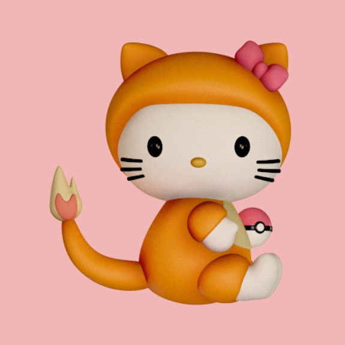
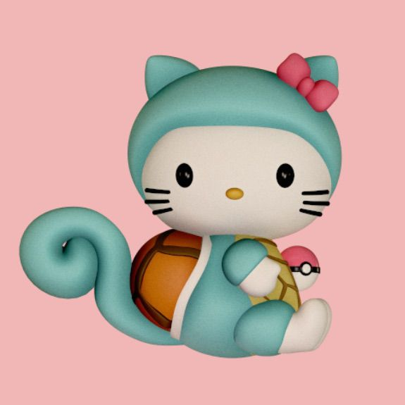
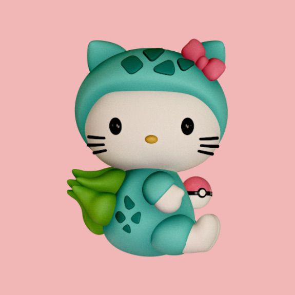

-
Hello-Charmander
Hello-Charmander é facilmente a mais gentil e bem comportada de sua linha evolutiva. Seus sentimentos e emoções podem ser lidos pela chama na ponta de sua cauda. Ela explode em fúria quando ela está com raiva, e vai piscar e ficar pequena e fraca caso esteja doente ou ferida. Se rosnar, significa que está com raiva ou prestes a atacar.
-
Hello-Squirtle
Hello-Squirtle geralmente é bem comportada, mas tem uma veia rebelde subjacente.
-
Hello-Bulbasaur
Hello-Bulbasaur são criadas por Criadores Pokémon para a época de serem pegas pelos Treinadores Iniciantes. Devido a isso são consideradas Pokémon Comportadas. Alguns consideram ela o Pokémon mais fácil para começar pois tem vantagem contra os dois primeiros líderes de ginásio da região de Kanto, que são Brock e Misty. As Hello-Bulbasaur tendem a ter uma forte lealdade a seus amigos e Treinadores.